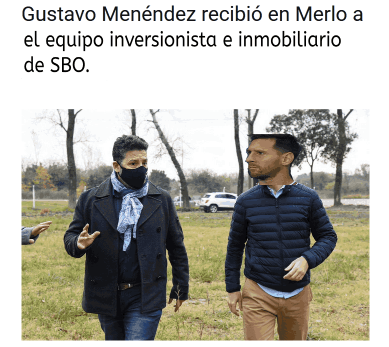

Sbo invierte una suma de $23.000.000 USD
en viviendas modernas para la comunidad de WILDE
Luego de la intervención por parte de la fiel comunidad del club debido a su reciente victoria en el torneo league of legends 2019 el sector inmobiliario de SBO CENTER MANNAGMENT pudo recaudar fondos y conseguir la inversion de inversionistas inversores del centro comunicativo INVIERTE SBO PROJECTS. Con esta importante cantidad de dinero se ha podido empezar la obra de planificación y urbanización del barrio EN EMERGENCIA: WILDE CITY. Con el proyecto denominado: LA CASA.
Además, el vicepresidente de comunicaciones del SBO CITY MERLO DEPARTMENT logro obtener el apoyo económico de uno de los pilares fundamentales para la realización de este proyecto: El intendente de MERLO CITY. Gustavo Menendez elojió el proyecto y juro comprometerse con que se termine el mismo para poder ofrecerlo y crear unos lazos de prosperidad y unión en las comunidades."LA CRISIS DE UNOS ES LA OPORTUNIDAD DE OTROS." Exclamó.